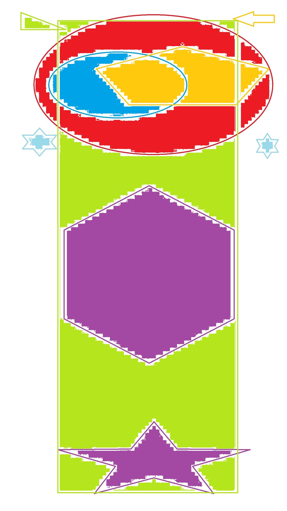

2. Display: block;
WIDTH
Setting the width: 700px; at this moment the element (for example element < p class="paragraph" >) will always have a width of 700px, even though the page has, for exammple 1200px, but if the page will have less than
700px, a horizontal bar will appear in the element.
max-width: 700px at this point, the element will have max 700px or less if the page is narrower.
min-width: 700px at this point, the element will have min width 700px. If the page will be narrower than 700px, a horizontal scroll bar will appear.
HEIGHT
height: 200px Now we set height of the 200px element. If we fill this element with text occupying more than 200px, this text will be displayed on the element under our element, that is our element will not grow, BUT THE
TEXT WILL COME TO THE NEXT ELEMENT.
overflow: hidden The solution of this situations is overflow: hidden. If you set:
height: 200px
overflow: hidden
the excess text will be truncated, and in a 200px block, you will display only as much text as it can fit (in the page source you can find the whole text).
overflow: scroll this argument adds scroll bar vertically or horizontally if the content does not fit in the element to which we still have dimensions.
% - important information
% - If in an element you use units as a percentage, they refer to the direct parent of this element. For example, height: 40%; -that is, the element will have a height of 40% of the parent's height.
SUPER UNITS: vw , vh
These units specify the percentage width (vw) and height (vh) but with regard to the browser window (not the parent). We can use them everywhere.
padding - internal margin
padding:10px 15px 5px 20px; sets accordingly: upper right lower left; inner element margin
padding: 15px 10 px; sets the upper and lower inner margin to 15px and right and left inner margin to 10px.
padding:20px sets all inner margins to 20px.
border
border: 5px dotted red - you can set accordingly: border-width / border-style / border-color
border-bottom: 2px dash green; We use this property for example to emphasize, and this is a border from below. We can still use border-top, border-right and border-left.
border-radius: 10% this border rounds the border corners by the given value.
border-radius: 10% 20% 35% 45% this property rounds the border corners starting from the upper left corner clockwise by the declared value.
border-radius: 10px; this property rounds the border corners by the given value.
border-radius: 10px 20px 40px 5px this property rounds the border corners starting from upper left corner clockwise by the declared value.
margin
margin: 0 auto; in this way, the set margin (up and down to zero and left and right auto) allows you to center the text horizontally.
Day3
box-sizing: border-box;
box-sizing: border-box; this property is very importantand useful. Thanks to box-sizing: border-box; giving the dimension of element we are sure that it will not change its external dimensions after adding padding and
border (without box-sizing: border-box; setting width:100px; height: 100px and adding padding: 10px, increases the whole element to 120px x 120px). (This property is set to the content-box by default).
position
position: static; this is the default setting for the property position.
position: relative;
position: absolute;
(in this example, element A is a parent with the "relative" property and B (descendant) with the absolute property). The "relative" property makes the element A a mao for the element B that has
the property "position: absolute". The element B will be placed in the upper left corner of element A with the property "relative" (as if the element B was on element A).
position: absolute; If for some element we set the "position absolute" property and do not set another element "position: relative" than the element having "position: absolute" will be set relative to <body> (as if the
body had "position: relative" set).
position: fixed; this property "sticks" an element to the window and despite scrolling the page, this element is always at the same point of the browser window.
position: sticky this property causes the element to move with the content of the page, but when it tuches the top of the browser window, it stops as if it had "position: fixed;".

float: left; if we add this property to the image, all page elements will be visible on the right side of the image (they will flow around it).
overflow: hidden;
celar: left;
What if the picture is bigger than the height of the content around it? Than the image begins to flow with the content from the elements below, but we don't want that!
What is the solution to the
problem?
There are two options:
1. For the image parent set "overflow: hidden;"
or|
2. For an element that should not overflow the image, set property "clear: left / right / both;" (one of these values).
IMPORTANT! If you want the text frame for the image not to fall under the image set for this text property "overflow: hidden;"